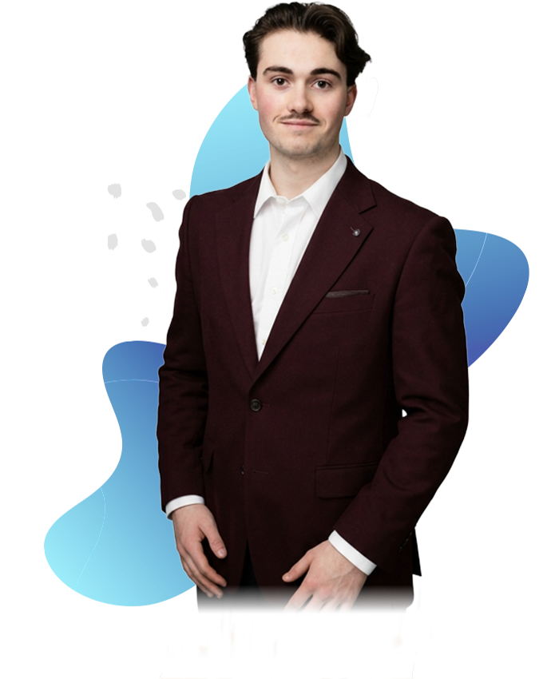

bâtissons une prospérité qui vous ressemble vraiment.

JC Capital, c'est une approche jeune et humaine de la planification financière. On part de votre réalité, on pose les bonnes questions et on bâtit un plan concret pour faire croître et protéger votre patrimoine — à votre rythme.